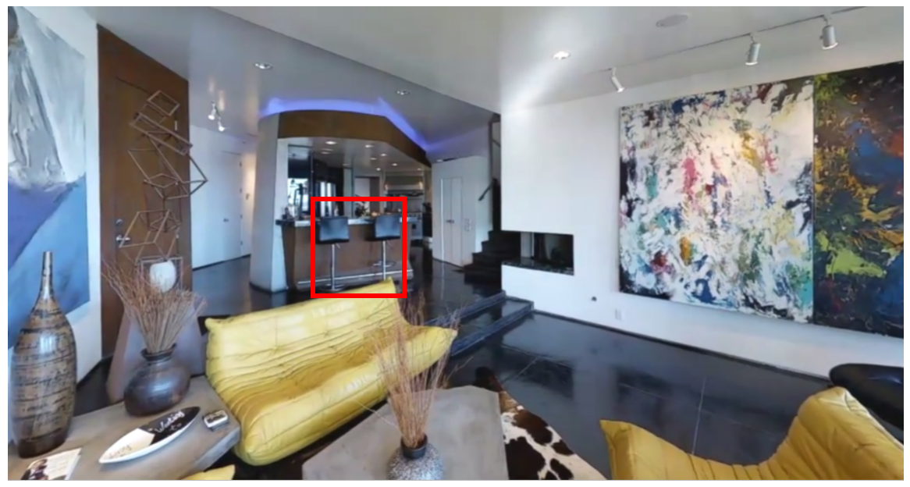

You will see a series of panoramic photos taken while moving from a goal location to other locations in a building. Your task is to write descriptions of goal object so that a smart robot can find the goal location. The robot understands language and recognizes objects about as well as a typical person. However, you should assume that the robot is visiting this building for the first time.
For your reference, the goal object is indicated by red bounding box, the path to other place is indicated by blue markers.
- You may not see the blue marker sometimes - when it's under your feet.
- These markers are not visible to the robot, and should not be mentioned in your descriptions.
Abundant descriptions will ensure that the robot arrives within 10 meters of the goal object. Therefore, we suggest:
- Spelling and punctuation is important. Please use full sentences with punctuation (,.) and correct spelling.
- Focus on the goal object, i.e., attributes of the goal object, relations between this object and other objects nearby, geological information
Mouse Controls:
- Left-click and drag the panoramic image to look around.
- Right-click on a blue marker to move to that position.
Before you start, please watch examples below, which will help you complete these tasks efficiently.
Note: This task is not suitable for devices with small screens or touch screen devices. Recommended browsers are Chrome, Firefox and Safari (not Internet Explorer).
We estimate that on average each HIT to take around 5 minutes to complete.

1. Describe its color, pose and a third attribute of the target.
White and blooming flowers with a slightly inclined stem.
2. Find at least two objects related to the target and describe their relationship.
They are set in a white flowerpot, above a black table surrounded by four grey chairs.
3. Explore in simulator and describe the region where the target is placed within one sentence.
The flowers are set in the dining room.
4. Explore nearby areas in simulator and describe the nearby regions within one sentence.
The flowers are in front of the stairs and near a living room.
5. Rewrite all sentences within three sentences:
In the dining room, there are some white and blooming flowers with a slightly inclined stem. They are set in a white flowerpot above a black table surrounded by four grey chairs in front of the stairs and near the living room.
1. Describe its color, pose and a third attribute of the target.
Black, tall and metal
2. Find at least two objects related to the target and describe their relationship.
The stools are under blue lights, behind a yellow sofa and in front of a table with a white desktop.
3. Explore in simulator and describe the region where the target is placed within one sentence.
The stools are set in a barroom by the stairs.
4. Explore nearby areas in simulator and describe the nearby regions within one sentence.
The stools are set next to a corridor and near a living room.
5. Rewrite all sentences within three sentences:
In a barroom next to a corridor, there are two black stools set by the stairs. They are set in in front of a brown table with white desktop by the stairs and near a living room.